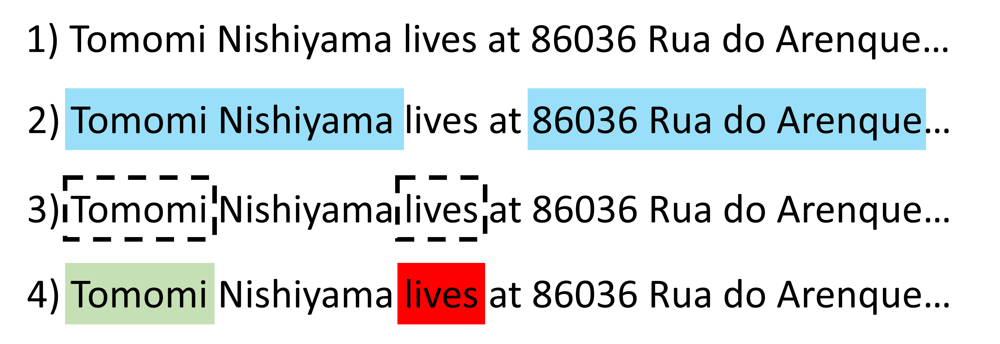

The pidpos package is intended to be model agnostic - depending on the level of technical skill and overhead the user wishes more complex models can be used for the underlying natural language processing (NLP). However, for the user to be informed as to the improvement for technical investment, we supply a broad characterisation of several models.
Here we present out of the box tagging for a synthetic data set drawn
from a openly available presidio-research data set synth_dataset_v2.
The data set consists of free text with associated tagged entities. The
challenge, how well does each model provided perform on this data and
are there edge cases, common flaws, or preprocessing steps that effect
performance.
Data set, Models and Metrics
Data set
The total data set (included in the package as
presidio_text) consists of 1500 passages of free text and a
total of 2,863 named entities. The entity break down is:
presidio_tags |>
group_by(entity_type) |>
summarise(Frequency = n()) |>
arrange(desc(Frequency))| entity_type | Frequency |
|---|---|
| PERSON | 857 |
| STREET_ADDRESS | 598 |
| GPE | 411 |
| ORGANIZATION | 250 |
| CREDIT_CARD | 136 |
| DATE_TIME | 119 |
| PHONE_NUMBER | 92 |
| TITLE | 92 |
| AGE | 74 |
| NRP | 55 |
| EMAIL_ADDRESS | 49 |
| DOMAIN_NAME | 37 |
| ZIP_CODE | 37 |
| IBAN_CODE | 21 |
| US_SSN | 16 |
| IP_ADDRESS | 14 |
| US_DRIVER_LICENSE | 5 |
In these trials, we limit the definition of personally identifiable data to a subset of entity types:
- PERSON
- GPE
- STREET_ADDRESS
- PHONE_NUMBER
- EMAIL_ADDRESS
- CREDIT_CARD
representing 2,143 of the 2,863 entities (approx 75%).
Models
Six out-of-the-box models are being compared:
spaCy (via spacy_factory()) - all
proposed entities taken as PID candidates:
-
LG:en_core_web_lg -
TRF:en_core_web_trf
udpipe (via udpipe_factory()) - PID
candidates restricted to proper nouns:
-
EWT:english-ewt-ud-2.5 -
GUM:english-gum-ud-2.5 -
LINES:english-lines-ud-2.5
REGEX (via regex_factory()) — PID
candidates restricted to matches against email, phone number, postcode,
and credit card patterns..
NB: the REGEX tagger is intended to catch structured PID
(e.g. emails). Hence we expect it to have poor sensitivity outside its
domain.
A seventh tagger has been included to explore if an ensemble may give
superior performance. The current implementation is a merge ensemble
(stacking the candidate sets) with existing-priority span conflict
resolution, i.e. where two candidate sets are combined the first set
takes priority - with tags from the second only added if they have no
overlap with the first. This approach results in the candidate set being
dependent on the order in which taggers are passed to the function. In
this trial the order was LG - EWT -
Regex, moving from most to least complex.
Metrics
The presidio dataset includes several entities made up
of multiple tokens (e.g. FirstName FamilyName) whereas the
taggers may return entities as single tokens. Hence instead of comparing
labels to tokens directly, detection will be based on if the candidates
overlap with the given NER span. If any identified token sits within the
same span as the known value it will be characterised as ‘accurate’, and
outside the span characterized as ‘inaccurate’. This is depicted in
figure 1 to aid interpretation. Where a label has at least one accurate
token it will be characterised as ‘detected’.

Figure 1. An example of model judgment criteria. For [1] an example passage of text there may be [2] multiple named entities. A given tagging model will identify [3] possible candidates, where they can be [4] accurate (green) or inaccurate (red).
Based on the accurate and detected labels
defined above tagger performance was expressed as three metrics:
-
Precision: -
Sensitivity: -
$F_{\beta}$ score: where is precision and is sensitivity.
For reference - a model that flags all word tokens to check would result in a precision of 22.5% and an F2 of 59%.
The factor was set at 2 to weight the scoring in favour of greater detection at the cost of additional false positives i.e. because missing PID is a greater utility cost than flagging extra candidates.
The following utilities are defined for reproducibility:
# ` F-beta calculation
fbeta <- function(s, p, b) {
(1 + b^2) * s * p / (s + b^2 * p)
}
#' Calculation of sensitivity, precision and f2 score
model_metrics <- function(comparison, name = "") {
sens <- filter(comparison, !is.na(entity_value)) |>
distinct(entity_value, .keep_all = T) |>
summarize(Sensitivity = 100 * mean(!is.na(Token)))
prec <- filter(comparison, !is.na(Token)) |>
summarize(Precision = 100 * (1 - mean(is.na(entity_value))))
cbind(sens, prec) |>
mutate(
Model = name,
`F2` = fbeta(Sensitivity, Precision, 2)
)
}
#' Iterate metrics over list of tagger candidates
summarize_model_metrics <- function(.list) {
imap(.list, model_metrics) |>
bind_rows() |>
select(Model, everything())
}
#' Calculate sensitivity at presidio entity level
summarize_by_entity <- function(frm, model) {
frm |>
dplyr::filter(!is.na(entity_type)) |>
group_by(entity_type) |>
group_modify(~ model_metrics(.x, model))
}
#' Iterate entity level metrics over list of tagger candidates
summarize_model_by_entity <- function(comparisons) {
imap(
comparisons,
summarize_by_entity
) |>
bind_rows() |>
mutate(
Model = factor(Model, levels = names(baseline_comparison)),
Sensitivity = round(Sensitivity, 1)
) |>
select(Model, entity_type, Sensitivity) |>
arrange(Model, desc(Sensitivity)) |>
pivot_wider(
id_cols = Model,
names_from = entity_type,
values_from = Sensitivity
)
}Analysis
The analysis script used to generate these results is available here to aid reproduction.
Baseline data
The first tests were performed using the free text ‘as-is’ (i.e. as
hosted on github).
The text includes standard capitalization, punctuation and escape
sequences e.g.:
-
Doc 3: Krisztián Szöllösy listed his top 20 songs for Entertainment Weekly and had the balls to list this song at #15. (What did he put at #1 you ask? Answer:“Tube Snake Boogie” by Szabina J Gelencsér ג€“ go figure) -
Doc 3: I’m Naomi Ryan, originally from ΕΓΚΩΜΗ, and i’m 31 y/o.
baseline_comparison |>
summarize_model_metrics() |>
mutate(across(where(is.numeric), ~ round(.x, 1)))| Model | Sensitivity | Precision | F2 |
|---|---|---|---|
| LG | 85.7 | 70.7 | 82.2 |
| TRF | 68.9 | 63.9 | 67.8 |
| EWT | 70.6 | 74.4 | 71.3 |
| GUM | 71.4 | 71.4 | 71.4 |
| LINES | 60.5 | 79.2 | 63.5 |
| Regex | 17.6 | 84.4 | 20.9 |
| Ensemble | 96.8 | 72.8 | 90.8 |
Amongst the out-of-the-box methods, the spaCy
LG model shows the best sensitivity and F2 score, while the
udpipe and REGEX methods have superior
precision at the cost of sensitivity.
The ensemble (LG - EWT- REGEX)
shows a marked increase in model performance, achieving over 96%
sensitivity and precision superior to the LG model.
summarize_model_by_entity(baseline_comparison)| Model | CREDIT_CARD | PERSON | STREET_ADDRESS | PHONE_NUMBER | GPE | EMAIL_ADDRESS |
|---|---|---|---|---|---|---|
| LG | 98.5 | 93.3 | 84.7 | 83.7 | 73.7 | 6.4 |
| TRF | 19.9 | 93.6 | 60.0 | 18.5 | 71.0 | 0.0 |
| EWT | 0.0 | 87.9 | 70.3 | 20.7 | 81.6 | 29.8 |
| GUM | 0.0 | 84.8 | 68.1 | 48.9 | 83.5 | 76.6 |
| LINES | 0.0 | 74.6 | 61.6 | 5.4 | 69.0 | 53.2 |
| Regex | 61.8 | 0.0 | 31.0 | 20.7 | 0.0 | 100.0 |
| Ensemble | 100.0 | 97.7 | 96.1 | 91.3 | 95.3 | 100.0 |
At the entity level we can see that the LG model has
good performance at detecting peoples names (PERSON) and sensitive
information (CREDIT_CARD) with poor performance for EMAIL_ADDRESS. The
structured nature of an email address lends itself well to the REGEX
method - which itself has poor performance where the LG
model is strong. The udpipe models have moderate
performance across the different entity categories, and notably appear
to catch edge cases in PERSON resulting in a boosted sensitivity for the
Ensemble model.
Addition of preprocessing stage
following the initial tests there were concerns that entities were
being missed by the taggers if they were in close proximity to
punctuation/ symbols. Hence, a second pass of the data was performed
having first replaced any control characters, symbols, and non-Latin
script with an equivalent size of white space (to keep entity character
spans accurate)
gsub("[^\\p{L}\\p{N} .,!?@']", " ", ..., perl = TRUE)
e.g.:
-
Doc 3: Krisztián Szöllösy listed his top 20 songs for Entertainment Weekly and had the balls to list this song at 15. What did he put at 1 you ask? Answer Tube Snake Boogie by Szabina J Gelencsér ג go figure -
Doc 40: I’m Naomi Ryan, originally from ΕΓΚΩΜΗ, and i’m 31 y o.
preprocessed_comparison |>
summarize_model_metrics() |>
mutate(across(where(is.numeric), ~ round(.x, 1)))| Model | Sensitivity | Precision | F2 |
|---|---|---|---|
| LG | 89.2 | 71.7 | 85.1 |
| TRF | 70.1 | 63.1 | 68.6 |
| EWT | 67.3 | 70.3 | 67.9 |
| GUM | 68.1 | 67.8 | 68.0 |
| LINES | 59.2 | 77.4 | 62.1 |
| Regex | 20.0 | 96.2 | 23.8 |
| Ensemble | 97.9 | 71.5 | 91.1 |
This process resulted in an improvement in F2 score for the spaCy models, and a reduction for the udpipe families.
summarize_model_by_entity(preprocessed_comparison)| Model | CREDIT_CARD | PERSON | PHONE_NUMBER | STREET_ADDRESS | GPE | EMAIL_ADDRESS |
|---|---|---|---|---|---|---|
| LG | 98.5 | 95.1 | 90.2 | 87.9 | 83.9 | 8.5 |
| TRF | 25.0 | 94.2 | 12.0 | 61.9 | 73.3 | 0.0 |
| EWT | 0.0 | 89.6 | 0.0 | 59.4 | 84.7 | 31.9 |
| GUM | 0.0 | 86.2 | 3.3 | 60.7 | 86.7 | 83.0 |
| LINES | 0.0 | 76.1 | 0.0 | 54.5 | 72.5 | 53.2 |
| Regex | 61.8 | 0.0 | 5.4 | 41.1 | 0.0 | 100.0 |
| Ensemble | 100.0 | 98.3 | 92.4 | 98.5 | 95.7 | 100.0 |
At the entity level - we can see for the LG model that
STREET_ADRESS and GPE sensitivity have increased quite strongly and, for
the Ensemble model, sensitivity has increased in every
possible category.
Reduced data quality
The presidio_text is a rather clean data set as far as
natural language processing is concerned. Punctuation is well structured
and proper grammatical rules are followed for the most part. In many
real world applications, including medical notes and similar sensitive
data, this could be a strong assumption.
To mimic one form of information loss, we repeat the experiment with all text converted to lower case, e.g.:
-
Doc 3: krisztián szöllösy listed his top 20 songs for entertainment weekly and had the balls to list this song at #15. (what did he put at #1 you ask? answer:“tube snake boogie” by szabina j gelencsér ג€“ go figure) -
Doc 40: i’m naomi ryan, originally from εγκωμη, and i’m 31 y/o.
lower_comparison |>
summarize_model_metrics() |>
mutate(across(where(is.numeric), ~ round(.x, 1)))| Model | Sensitivity | Precision | F2 |
|---|---|---|---|
| LG | 76.2 | 72.0 | 75.3 |
| TRF | 63.4 | 60.6 | 62.8 |
| EWT | 3.4 | 76.2 | 4.2 |
| GUM | 2.2 | 70.8 | 2.7 |
| LINES | 1.3 | 28.3 | 1.6 |
| Regex | 17.6 | 84.4 | 20.9 |
| Ensemble | 80.1 | 72.8 | 78.5 |
While all taggers (excluding the Regex) see a reduction
in Sensitivity, this is glaringly true for the UDPipe
models. The UDPipe framework relies heavily on proper
capitalisation to differentiate a proper noun from all nouns, so while
we could reclaim sensitivity it would be at the cost of precision.
summarize_model_by_entity(lower_comparison)| Model | CREDIT_CARD | STREET_ADDRESS | PHONE_NUMBER | PERSON | GPE | EMAIL_ADDRESS |
|---|---|---|---|---|---|---|
| LG | 98.5 | 90.6 | 88.0 | 76.0 | 41.6 | 0 |
| TRF | 19.1 | 45.9 | 10.9 | 91.9 | 71.4 | 0 |
| EWT | 0.0 | 3.2 | 0.0 | 4.0 | 5.9 | 0 |
| GUM | 0.0 | 4.2 | 9.8 | 0.6 | 1.2 | 0 |
| LINES | 0.0 | 0.3 | 0.0 | 2.3 | 1.6 | 0 |
| Regex | 61.8 | 31.0 | 20.7 | 0.0 | 0.0 | 100 |
| Ensemble | 100.0 | 92.9 | 90.2 | 76.6 | 42.7 | 100 |
At the entity level we first see that the udpipe
models show poor sensitivity across all categories. Interestingly, the
spaCy models show different levels of resilience to the
loss of casing - while the LG model was the better overall
performer originally, when it comes to the PERSON entity we can see a
strong drop in sensitivity for the LG tagger when casing
was removed (76% vs 93.3%) whereas the TRF model is almost
independent of casing (91.9% vs 93.6%).
Re-introduction of casing
The reduction in F2 score associated with removal of casing is
concerning for all models and especially the udpipe. To partially
explore this behaviour a final test was made where the passages were
automatically cased via the tools::toTitleCase utility
(tools::toTitleCase(lower(...))) e.g.:
-
Doc 3: Krisztián Szöllösy Listed His Top 20 Songs for Entertainment Weekly and Had the Balls to List this Song at #15. (What Did He Put at #1 you Ask? Answer:“Tube Snake Boogie” by Szabina j Gelencsér ג€“ Go Figure) -
Doc 40: I’m Naomi Ryan, Originally from Εγκωμη, and I’m 31 y/O.
titlecase_comparison |>
summarize_model_metrics() |>
mutate(across(where(is.numeric), ~ round(.x, 1)))| Model | Sensitivity | Precision | F2 |
|---|---|---|---|
| LG | 77.6 | 62.4 | 74.0 |
| TRF | 69.7 | 64.7 | 68.6 |
| EWT | 75.6 | 43.8 | 66.0 |
| GUM | 76.4 | 33.4 | 60.8 |
| LINES | 63.2 | 50.5 | 60.2 |
| Regex | 17.6 | 84.4 | 20.9 |
| Ensemble | 95.6 | 51.8 | 81.8 |
The re-introduction of casing greatly increases the sensitivity of
the udpipe models with a caveat that the precision has
greatly reduced. As a result, the Ensemble model shows a
greatly improved Sensitivity and hence a larger F2 score though a
precision of approx. 50% does indicate for every valid token there is an
invalid token, highlighting there is improvement to be had.
summarize_model_by_entity(titlecase_comparison)| Model | PERSON | STREET_ADDRESS | PHONE_NUMBER | GPE | CREDIT_CARD | EMAIL_ADDRESS |
|---|---|---|---|---|---|---|
| LG | 87.3 | 82.8 | 79.3 | 67.8 | 43.4 | 0.0 |
| TRF | 92.4 | 62.2 | 17.4 | 68.6 | 33.8 | 0.0 |
| EWT | 93.3 | 75.0 | 27.2 | 88.2 | 0.0 | 34.0 |
| GUM | 92.7 | 70.2 | 54.3 | 87.1 | 2.9 | 85.1 |
| LINES | 77.4 | 63.2 | 18.5 | 69.4 | 0.0 | 66.0 |
| Regex | 0.0 | 31.0 | 20.7 | 0.0 | 61.8 | 100.0 |
| Ensemble | 98.6 | 95.6 | 89.1 | 96.1 | 80.1 | 100.0 |
At the entity level, if we compare to the lower case work we note
that the LG taggers sensitivity to the CREDIT_CARD class
has dropped on introducing the title case (98.5% with lower case vs
43.4% with title case). Aside from building an ensemble tagger by
combination of existing algorithms, a combination of preprocessor
pipelines may offer improvements.
Conclussions
Detection of sensitive data in large quantities of free text presents a significant challenge at scale. The benchmarking presented here suggests a meaningful level of reliability, particularly when an ensemble approach is used to compensate for the systematic gaps each individual tagger exhibits. PIDPOS provides a framework for composing and comparing taggers — future work will focus on optimising ensemble behaviour through tagger weighting and confidence-based conflict resolution.